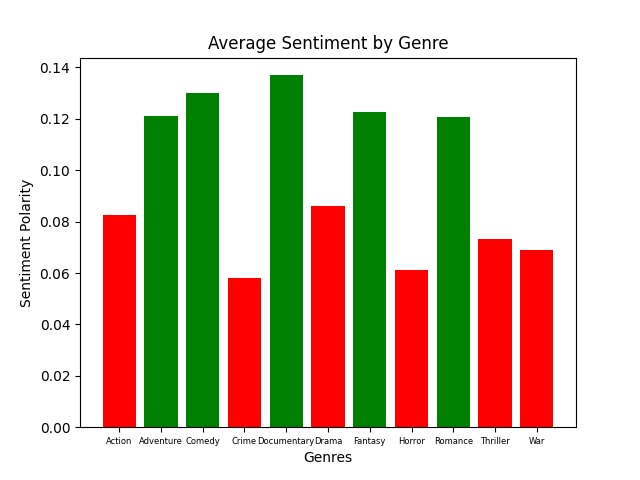
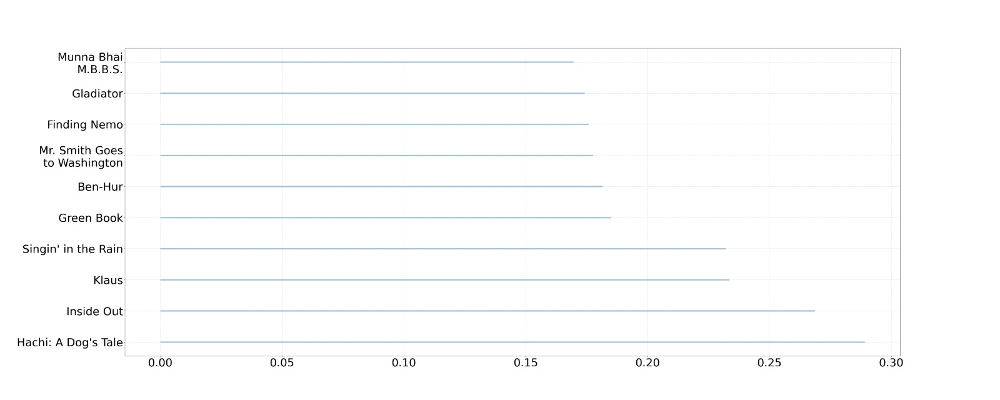
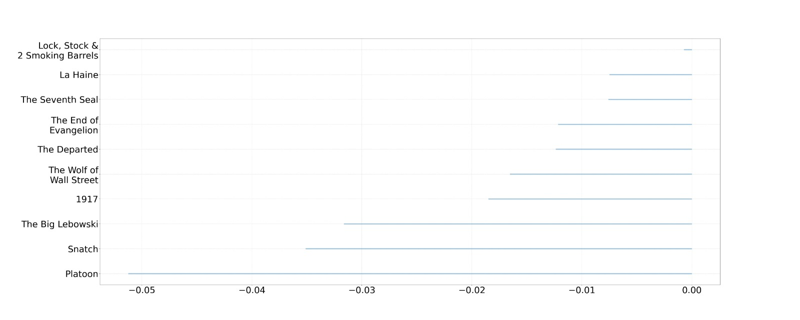

Genres Comparison
Based on TMDB, we tried to predict genres average sentiment score and compare between them.
As we can see in the graph, all the green genres are predicted to be positive and all the red genres are predicted to be more negative. As we assumed, Comedy is up there at the 2nd place, with Documentary being the top one, and also Adventure, Fantasy and Romance lead behind them, while Crime, Horror and War placed at the bottom.
The Sentiment Analysis pretty much matched with our assumption. We can learn from it that there is actually a clear distinction between movies from different genres that the algorithm predicted correctly.
Most Positive - Hachi: A Dog's Tale:
Score: 0.2891444259892686
A drama based on the true story of a college professor's bond with the abandoned dog he takes into his home.
The movie with the highest score, Hachi: A Dog's Tale, is one of the most exciting films we have came across. It shows the deep connection and loyalty between professor Parker and his dog Hachi. Based on a true story, one can't have his eyes dry after watching this.
With no surprise, the algorithm couldn't be more accurate giving this movie the highest score amongst the most popular movies on IMDB.
Most Negative - Platoon:
Score: -0.051241804744516437
As a young and naive recruit in Vietnam, Chris Taylor faces a moral crisis when confronted with the horrors of war and the duality of man.
The movie with the lowest score, Platoon, is very violent and hard to watch. It covers moral dilemmas of soldiers fighting in guerrilla wars. While this movie shows the hard reality in an amazing way, the algorithm was on-point giving this one the lowest score amongst the most popular movies.
Extra Results
Out of IMDB's top 250 movies, these are the 10 most positive one's. As we previously saw, Hachi: A Dog's Tale is NO.1 on this list, but the other one's are considered very positive and happy movies as well.
And finally, out of IMDB's top 250 movies, these are the 10 most negative one's. All of the movies in this list except The Big Lebowski, are generally considered as pretty intense. If you think about it, although the story about Lebowski is a comedy, it has a lot of kidnapping, shooting, drugs and violence involved. It is actually considered a crime movie besides being a classic comedy, and our algorithm was able to identify that fact.